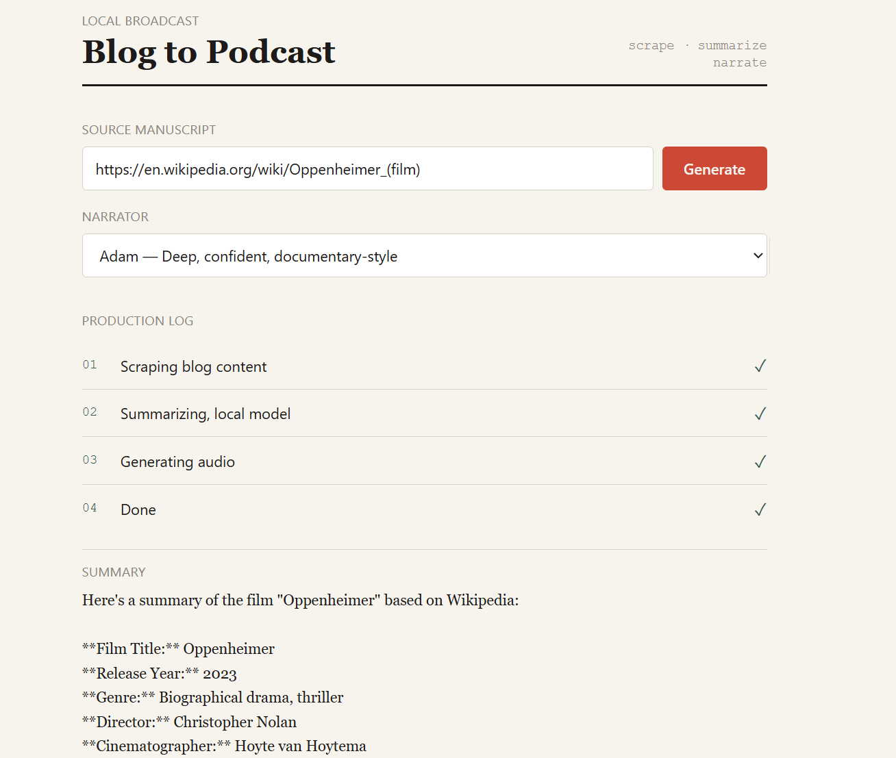

Blog to Podcast Agent
Turns any blog post into a narrated podcast episode: paste a URL and watch it get scraped, summarized by a local LLM, and converted to speech, live, end to end. Rebuilt from a single-file script into a proper two-tier system with FastAPI + SQLite backend, Next.js/TypeScript/Tailwind frontend with real persistence and live progress updates, as a system-design learning project.
VIEW ON GITHUB ↗